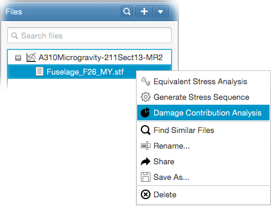

Damage contribution analysis is performed in order to have a better insight to pilot points by means of individual damage
contributions of fatigue events in the spectrum. For given pilot points, damage contribution analysis basically computes
the damage ratios (i.e. contributions) of individual selected fatigue events (eg. vertical gusts, lateral gusts, delta-p etc.).
With the outputs of the analysis, one is able to;
See the effect of separate fatigue events and flight segments on a pilot point,
Determine which fatigue events are significant or insignificant on a pilot point,
Determine whether a pilot point is mainly driven by delta-p stresses.
In order to perform a damage contribution analysis, select and right-click on a STF file in the file tree.
Select Damage Contribution Analysis from the popup menu as shown below.

This will open the damage contribution analysis input panel. Input panel contains all necessary input fields in order to perform the analysis.
These are; damage contribution definition, material data, stress sequence generation parameters and rainflow omission parameters.
You can find detailed information on the last 3 input panels from the following links;
Here, you will need to specify the damage contributions to be computed. You can select Delta-P, Delta-T and incremental event contributions.
For incremental events, first enter the name of event you are interested in (this will filter the events list below). Then select the filtered events
from the list, and select the flight segment to compute the contribution for (by default all flight segements are selected). And finally click 'Add' to
add the contribution to the defined contributions list.